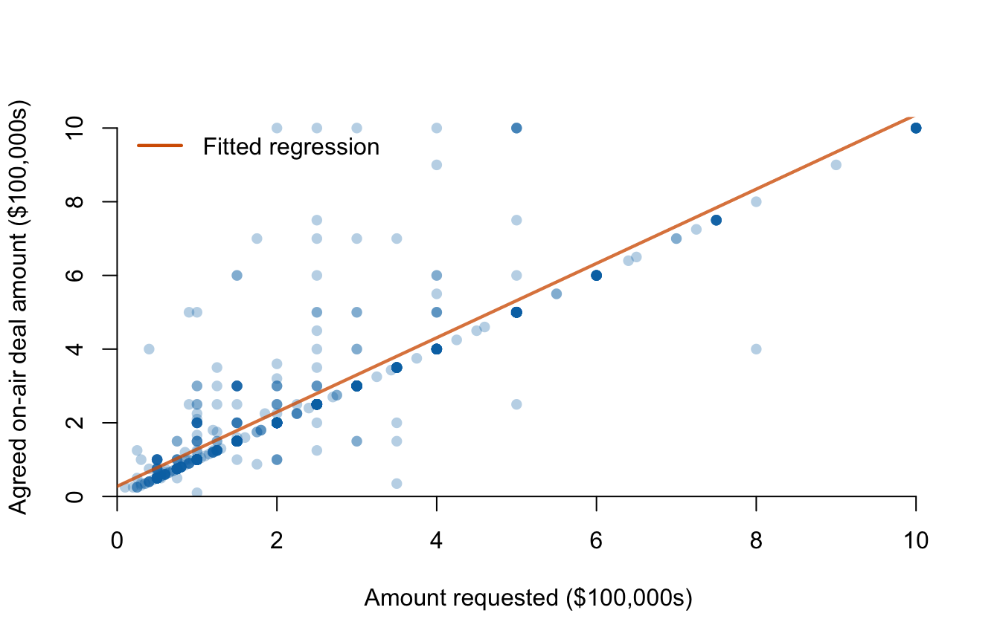

Lecture 1: Simple linear regression
- state a simple linear regression model and identify its components;
- explain least-squares estimation;
- distinguish observations, fitted values, errors, and residuals;
-
fit a regression with
lm()in R; - interpret an intercept and slope in units and within the observed range.
Before class
Video preparation
Watch Stanford Statistical Learning
3.1
Simple Linear Regression. Focus on the population line, the fitted line,
and least squares.
If lines, slopes, intercepts, or subscripts are not secure, review Mathematics Refresher: straight lines and indices.
For the 882 pitches with an on-air deal, define:
- \(Y_i\): agreed on-air deal amount, in $100,000s;
- \(X_i\): amount initially requested, in $100,000s.
Before fitting a model, predict the sign and plausible units of the slope.
Check your preparation
The slope should be positive: larger requests tend to accompany larger agreed amounts. Its units are $100,000 of agreed amount per $100,000 requested, which simplifies to a ratio.
In class
Stanford explanation (review): 3.1 Simple Linear Regression.
Begin with the data

Each point is one pitch with an on-air deal. Read requested amount horizontally and agreed amount vertically; both axes use units of $100,000. The orange line gives the fitted conditional mean, not the outcome of every pitch. The display shows 864 of the 882 deal records so that the dense region is readable. Eighteen records above $1 million on at least one axis are omitted from this display but retained when estimating the orange line. Always say when a graph is zoomed; otherwise readers may mistake the displayed range for the complete data.
The population model
The simple linear regression model is
\[ Y_i=\beta_0+\beta_1X_i+\varepsilon_i. \]
Equivalently, the conditional mean is
\[ E[Y_i\mid X_i=x]=\beta_0+\beta_1x. \]
- \(Y_i\) is the outcome for observation \(i\).
- \(X_i\) is the predictor.
- \(\beta_0\) is the population intercept.
- \(\beta_1\) is the population slope.
- \(\varepsilon_i\) is the part of \(Y_i\) not represented by the line.
The slope is
\[ \beta_1 =E[Y\mid X=x+1]-E[Y\mid X=x]. \]
It is the expected change in \(Y\) associated with a one-unit increase in \(X\). “Associated with” is deliberate: a regression line alone does not identify a causal effect.
Least-squares estimation
The fitted sample line is
\[ \widehat Y_i=b_0+b_1X_i. \]
For each observation, the residual is the vertical difference
\[ e_i=Y_i-\widehat Y_i. \]
Why define error vertically?
For observation \(i\), the model predicts \(\widehat Y_i\) at its observed \(X_i\). The residual \(e_i=Y_i-\widehat Y_i\) is therefore a difference in the outcome’s units. A positive residual lies above the line; a negative residual lies below it.
Adding raw residuals is not a useful score: positive and negative misses can cancel. Adding absolute residuals avoids cancellation, but the resulting objective has sharp corners and is harder to optimise algebraically. Squared residuals are non-negative, penalise large misses more strongly, and give a smooth objective with a tractable solution. This is a modelling choice, not a claim that squared error is the only possible loss function.
Ordinary least squares chooses \(b_0\) and \(b_1\) to minimise
\[ \operatorname{SSE}=\sum_{i=1}^{n}e_i^2 =\sum_{i=1}^{n}(Y_i-b_0-b_1X_i)^2. \]
The initials OLS stand for ordinary least squares: the rule that fits the linear model by minimising this squared-error criterion.
Try the criterion yourself
Drag either square handle. The vertical segments are residuals; the displayed SSE updates after every move. Then reveal the line with the smallest SSE.
Least-squares line lab
Squares make every contribution to SSE non-negative. Longer residuals contribute disproportionately because their lengths are squared.
For simple regression,
\[ b_1=\frac{s_{XY}}{s_X^2}, \qquad b_0=\bar y-b_1\bar x. \]
The fitted line therefore passes through \((\bar x,\bar y)\).
Fit and read the model in R
## (Intercept) ask_100k
## 0.2757097 1.0085098The fitted equation is approximately
\[ \widehat{\text{deal amount}} =0.276+1.009\times\text{amount requested}, \]
with both monetary variables measured in $100,000s.
The slope means that one additional $100,000 requested is associated with about $100,900 more in the fitted agreed amount among pitches that reached an on-air deal. It does not mean that asking for more causes investors to offer more.
The intercept predicts about $27,600 at a request of zero. A zero request lies outside the observed range and is not substantively meaningful; an intercept can be mathematically necessary without having a useful standalone interpretation.
head(data.frame(
observed = deals$deal_100k,
fitted = fitted(deal_model),
residual = residuals(deal_model)
))## observed fitted residual
## 1 0.50 0.7799646 -0.2799646
## 2 4.60 4.9148549 -0.3148549
## 6 5.00 5.3182589 -0.3182589
## 7 2.50 2.7969843 -0.2969843
## 11 0.35 0.6286881 -0.2786881
## 12 2.50 2.7969843 -0.2969843For every row, observed = fitted + residual.
After class
Retrieval
- What is the difference between \(\varepsilon_i\) and \(e_i\)?
- What does least squares minimise?
- Why must a slope interpretation include units?
- Why can an intercept be mathematically valid but substantively unhelpful?
- Why is the slope not automatically causal?
Check your answers
- \(\varepsilon_i\) is an unobserved population-model error; \(e_i\) is the observed residual after fitting the sample line.
- The sum of squared residuals.
- The slope is change in outcome units per one predictor unit.
- The value \(X=0\) may lie outside the observed range or lack substantive meaning.
- The predictor was not randomly assigned and other factors may affect both variables.
Practice
- Use the fitted equation to predict the agreed amount for requests of $100,000 and $500,000.
- Calculate the residual for a pitch that requested $300,000 and agreed $250,000.
- Explain why
lm(y ~ x, data = df)treats the variable left of~as the outcome. - Fit
equity_offered_pct ~ seasonand interpret both coefficients. - State the unit of every quantity in Question 4.
Check your answers
- Substitute
ask_100k = 1andask_100k = 5; the fitted values are about 1.284 and 5.318 in $100,000s. - The fitted amount is about 3.301 in $100,000s, so the residual is \(2.5-3.301\approx-0.801\), or about \(-\$80{,}100\).
- R formulas use
outcome ~ predictors. - The fitted intercept is about 20.46 percentage points and the slope about \(-0.824\) percentage points per season. Later seasons are associated with smaller initial equity offers on average.
- The outcome and intercept use percentage points; the predictor uses seasons; the slope uses percentage points per season.
Continue to Lecture 2: Regression assumptions and coefficient inference.
For a more formal treatment, see James et al., An Introduction to Statistical Learning, 2nd ed., Sections 3.1 and 3.6.2.